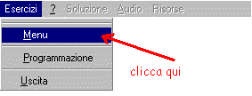
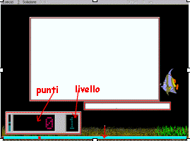
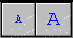
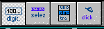

°
°
°
°
|
DESCRIZIONE | ritorna | |||||
| COME ESEGUIRE | |||||||
| COME PROGRAMMARE | |||||||
| MODALITA' OPERATIVE: | |||||||
° |
DIGITARE | ||||||
° |
SCEGLIERE | ||||||
° |
SELEZIONARE | ||||||
° |
CLICCARE | ||||||
| PROGRAMMAZIONE VELOCE | |||||||
Soft di esercitazione multimediale programmabile con le seguenti caratteristiche:
- semplicità nella programmazione delle esercitazioni ;
- multimedialità con l'uso di file grafici .BMP e di file audio .WAV ;
- adattabilità all'apprendimento di tutte le discipline ;
- rendere particolarmente stimolante e socializzante l'apprendimento;
- facilità di scambio delle esercitazioni multimediali tra scuole (si trasporta solo la cartella con i dati dell'esercitazione);
STRUTTURA
Il soft ricalca lo schema dei videogiochi infatti è formato da livelli (cinque) superabili al raggiungimento di un punteggio stabilito.
Per ogni livello si possono inserire:
- i punti occorrenti per il superamento del livello;
- i punti acquisiti per ogni esercizio esatto;
- i punti persi per risposte errate;
- i punti persi per non aver risposto nel tempo stabilito;
- tempo concesso per rispondere;
- tempo di gioco guadagnato.
Ogni livello è composto da:
- presentazione : parte iniziale ( testo, grafica o suono) che serve per spiegare all'alunno il lavoro da eseguire in quel livello. Con la presentazione si può attivare anche un soft esterno.
- consegna : parte ( testo, grafica o suono) comune ad un blocco di esercizi;
- esercizi.
Gli esercizi sono composti da uno o più quesiti.
L'esercizio composto da un solo quesito è la più semplice struttura programmabile. E' composto da domanda (testo, grafica o suono) e risposta.
L'alunno può fornire la risposta in quattro modi operativi:
1) digitando ;
2) selezionando;
3) scegliendo da una lista;
4) cliccando in una porzione di video;
Nella modalità 1, in fase di programmazione, si possono inserire fino a cinque soluzione corrette.
Quando l'esercizio è composto da più quesiti (max 7), questi sono presentati in sequenza. I quesiti possono presentarsi in un'unico blocco o in più parti via via che l'alunno risponde. Quando i quesiti sono in un unico blocco di testo è possibile inserire delle linee sempre nel testo che verranno sostituite dalle varie soluzioni.
Gli esercizi possono essere eseguiti in ordine sequenziale o in ordine casuale.
Quando gli esercizi sono eseguiti in ordine casuale, il soft ripropone quelli risolti in modo errato fino a quando non vengono risolti correttamente.
La risoluzione dell'esercizio è facilitata da tre accessori :
- il suggerimento;
- l'avvio di un programma esterno;
- la soluzione;
Il suggerimento è un' aiuto ( testo , grafica o audio) inseribile facoltativamente in ogni soluzione ed è utilizzabile dall'alunno cliccando sull'immagime del gufo (appare solo quando è disponibile il suggerimento).
Per far 'partire' un programma esterno, per esempio il prog. calc.exe (la calcolatrice di windows) l'alunno deve cliccare su un elemento del menù che appare con la presentazione dell'esercizio.
Cliccando , in qualsiasi momento 'soluzione', si perdono i punti stabiliti per risposta errata e appare la soluzione.
Il menù degli esercizi si presenta con:

Appare la finestra:

Si leggono tutte le esercitazioni disponibili e le relative cartelle.
Il programma EM 'vede' tutte le cartelle che si trovano nella cartella contenente se stesso. Dentro queste cartelle si trovano tutti i file necessari per lo svolgimento delle relative esercitazioni.
Questo modo di operare permette di inserire o togliere , in qualsiasi momento, esercitazioni .
Per scegliere l'esercitazione usare il mouse o i tasti ' sù giù'.
Un doppio clic sul titolo dell'esercizio scelto o la digitazione del tasto invio fanno partire l'esercitazione.

Le finestre sono mobili. Si spostano con il mouse. Cliccare la cornice rossa e trascinare.
Con click sulla voce 'programmazione' compare la finestra che invita a digitare la password.
Questa è indispensabile per leggere o modificare le esercitazioni già scritte.
Per l'insegnante è possibile superare la password con un'operazione di riconoscimento.
| Per creare una nuova esercitazione: | ||||
| cliccare su | e scrivere il nome della nuova cartella che si vuole creare. | |||
Non è possibile scrivere il nome di una cartella già esistente. E' possibile fare ciò solo se nella cartella esistente non è presente il file '.ese '. Successivamente apparirà una schermata dove si individua in alto sul menù la cartella di lavoro del momento con tutto il percorso. Nello spazio apposito si scrive il nome dell'esercitazione. Il significato dei valori numerici (tutti modificabili) è immediato. Per un'aiuto cliccare sul tasto ?. Per eliminare l'aiuto cliccare di nuovo lo stesso tasto.
Cliccando sulle scritte Livello ,,,, si aprono le finestre di testo dove si digita il programma esercitazione.
Le finestre di testo sono ridimensionabili cliccando e trascinando il pulsante rosso. La larghezza della finestra, che, può essere diversa da livello a livello, viene riprodotta in fase di esecuzione, dalla larghezza della lavagna. Anche la dimensione del testo è variabile e memorizzabile.
I bottoni
da cliccare sono 
Regole della programmazione
Il testo che si scrive nelle prime righe fino alla parola .esercizio oppure .consegna è riservato alle presentazioni.
La presentazione (max 255 car) serve a descrivere brevemente gli esercizi di quel livello .
Se nel testo si scrive il nome di un file .wav, per esempio prova.wav, quando avverrà la presentazione verrà eseguito il suono del file.
Se nel testo si scrive il nome di un file .bmp, per esempio prova.bmp, quando avverrà la presentazione verrà presentato il disegno relativo.
Attenzione: scrivere il nome dei file in minuscolo !!
Ovviamente il nome del file non apparirà sulla lavagna.
Finita la stesura della presentazione si porta il cursore sulla sinistra e si digita .co (un punto seguito dalle lettere co). Il computer completerà la frase '.CONSEGNA'. Il testo dopo questa frase è quello che viene associato a tutti gli esercizi seguenti, fino a quando non si scrive un' altra consegna.
In questo modo si evita di digitare sempre lo stesso testo nei vari esercizi.
Il testo consegna finisce con l'inizio dell' esercizio.
L'inserimento della consegna o della presentazione è facoltativo.
Programmazione degli esercizi
Si scriva, a inizio rigo, .es. Il computer completerà con .ESERCIZIO N° * e va accapo.
Non occorre scrivere il numero perchè sarà fatto automaticamente dal computer, quando aprirà il file (ovviamente deve essere prima salvato).
Nella riga dove risiede la parola .esercizio N° *, si può scrivere il nome di un programma esterno da fornire come risorsa all'alunno.
Per esempio:
.ESERCIZIO N° * calcolatrice cal.exe xxx
quando si eseguirà l'esercizio, la parola calcolatrice apparirà sul menù e se l'alunno la clicca partirà il programma cal.exe, con gli eventuali parametri xxx.
Per iniziare vedi la prima modalità operativa: modalità digitare.
Modalità digitare.
Adesso scriviamo un esercizio.
Il caso più semplice è quello di una domanda e di una risposta da digitare.
Si scrive la domanda e la risposta che l'alunno dovrà digitare preceduta dal carattere \
Esempio:
.CONSEGNA Risolvi la seguente espressione:
.ESERCIZIO N° *
(2+3)/2=
\2,5
Questo produrrà sulla lavagna il seguente testo:
Risolvi la seguente espressione:
(2+3)/2=
l'alunno dovrà digitare 2,5 per rispondere correttamente.
Per accettare più risposte ( per es. 2,5 e 2.5) scrivere il testo della risposta così:
CONSEGNA Risolvi la seguente espressione:
.ESERCIZIO N° *
(2+3)/2=
\2.5\2,5
Si possono inserire fino a sei risposte valide.
Se riteniamo utile fornire un suggerimento, lo spazio da utilizzare è quello tra il margine sinistro ed il carattere \
questo testo appare come suggerimento\2.5\2,5
Uso dei file audio o dei file grafici.
Esempio:
CONSEGNA Risolvi la seguente espressione:
.ESERCIZIO N° *
prova.wav (2+3)/2=
sugg.wav\2,5
Questo produrrà sulla lavagna il testo, mentre l'audio esegue il file prova.wav.
Risolvi la seguente espressione:
(2+3)/2=
contemporaneamente si attiverà la voce audio sul menù e comparirà l'immagine di un gufo nella finestra dei punti.
Cliccando sul gufo si può ascoltare il suggerimento registrato in sugg.wav, mentre cliccando su audio si può ascoltare di nuovo l'audio di prova.wav.
Esercizio con più domande.
Analizziamo il seguente esempio:
.CONSEGNA Scrivi cosa va scritto al posto delle linee.
.ESERCIZIO N° *
La fotosintesi _________ avviene nelle _________.
\clorofilliana
\foglie
.ESERCIZIO N° *
(7+1)*2=_______=_____
\8*2
\16
In entrambi gli esempi, l'alunno deve dare la prima soluzione. Il computer aggiorna la lavagna sostituendo la soluzione alle linee e attende la seconda soluzione.
Ovviamente si possono inserire dei suggerimenti per ogni soluzione .
Sono possibili strutture con 7 domande consecutive.
Modalità scegliere.
In vari casi conviene non richiedere la risposta scritta ma permettere la scelta della soluzione da una lista di nomi.
Ecco un esempio:
CONSEGNA scegli la risposta esatta.
.ESERCIZIO N° *
Quali dei seguenti numeri è divisore di 10
\!5\3\7\9
.ESERCIZIO N° *
Il cane vola?
\!falso\vero
La lista è una serie di soluzioni attendibili con un carattere ( ! ) che identifica la soluzione esatta.
In fase di esecuzione, per esempio del secondo esercizio descritto, si ha la lavagna contenente la frase
Il cane vola?
ed una finestra di scelta con le due parole vero e falso.L'alunno dovrà scegliere la soluzione.
Le voci della lista possono essere scritte, in sede di programmazione, in qualsiasi ordine perchè verranno presentate all'allievo in ordine alfabetico.
Modalità selezionare.
La terza modalità di risposta è selezionare, con il mouse, la soluzione presente sulla lavagna.
Esempio
CONSEGNA Seleziona la risposta esatta.
.ESERCIZIO N° *
Quali dei seguenti numeri è divisore di 10
5 3 7 9
\"5
.ESERCIZIO N° *
Il cane vola?
- falso
- vero
\"falso
Osservate che cambia solo il simbolo chiave che segue \
In questo caso sulla lavagna il primo esercizio sarà:
Seleziona la risposta esatta.
Quali dei seguenti numeri è divisore di 10
5 3 7 9
e l'alunno dovrà selezionare il numero 5.
Modalità cliccare.
Questa modalità operativa interessa gli esercizi con testo/grafica
In fase di esecuzione, l'alunno dovrà cliccare sul video la soluzione corretta.
Il modo di programmare è spiegato nel capitolo PROGRAMMAZIONE VELOCE
La programmazione veloce può essere utilizzata per tutte le modalità operative ma è essenziale per la 'modalità cliccare'.
La prima operazione è scegliere la modalità cliccando sul bottone corrispondente

Osservate che rimane attivo solo quello che è stato cliccato.
La seconda operazione consiste nel selezionare un testo degli esercizi e premere il tasto ctrl ( questa operazione equivale ad un doppio clic sul testo).
Al rilascio del tasto ctrl il computer si comporta in modo dipendente dal bottone attivo.
Se il bottone attivo è il 1° o il 2° o il 3° e la parola selezionata è il nome di un file wav o bmp il computer apre questi file, altrimenti la parola selezionata verrà scritta come soluzione ed al suo posto verrà riportata una linea.
Questa funzione è utile per scrivere esercizi 'importando' un testo 'scannato'.
Se il
bottone attivo è l'ultimo cioè 
Il computer è attivo solo per i nomi dei file bmp.
Selezionando il nome di un file bmp, esistente nella cartella di lavoro, per esempio prova.bmp, (attenzione!! il nome deve essere scritto in minuscolo) al rilascio di ctrl si va nella programmazione dei punti caldi della modalità cliccare. Apparirà il contenuto del file grafico e degli oggetti quadrati color azzurro e rosso.
Con il mouse si spostano questi quadratini sul disegno in modo da indicare con i rossi le risposte errate e con l' azzurro quello esatte. I quadrati sono modificabili nelle dimensioni (cliccare e trascinare gli angoli) e nel colore (cliccandoli con il pulsante destro del mouse).
Se nel disegno non si mettono quadrati rossi, nello svolgimento appare la 'manina' per tutto il disegno. Risulterà così più difficile individuare la risposta esatta.